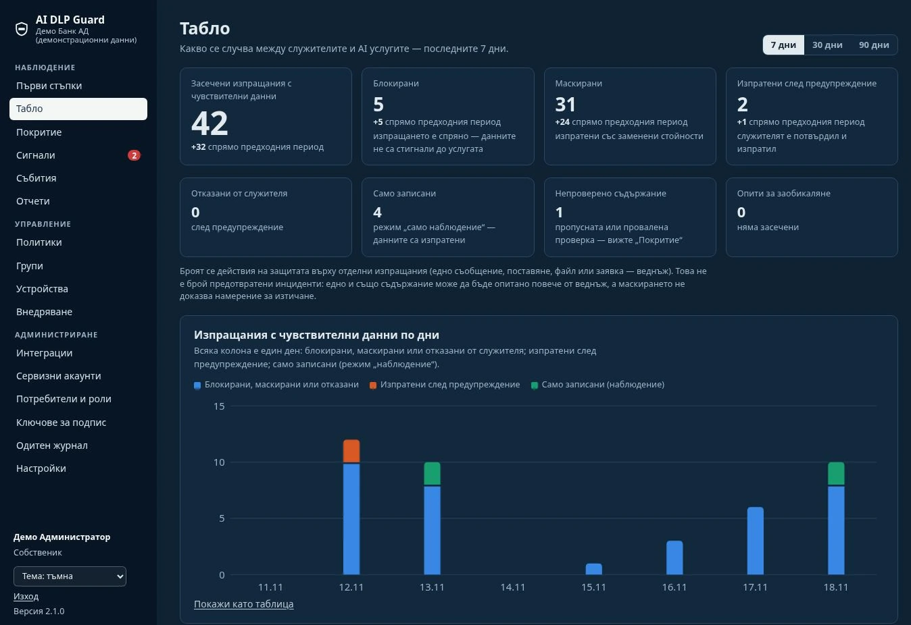
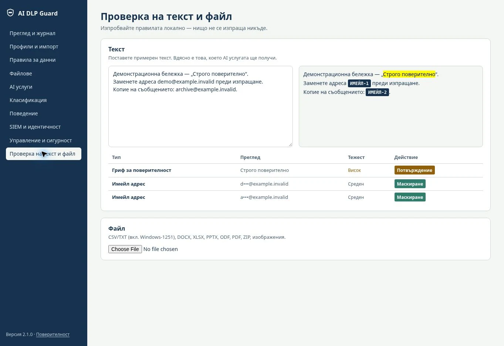
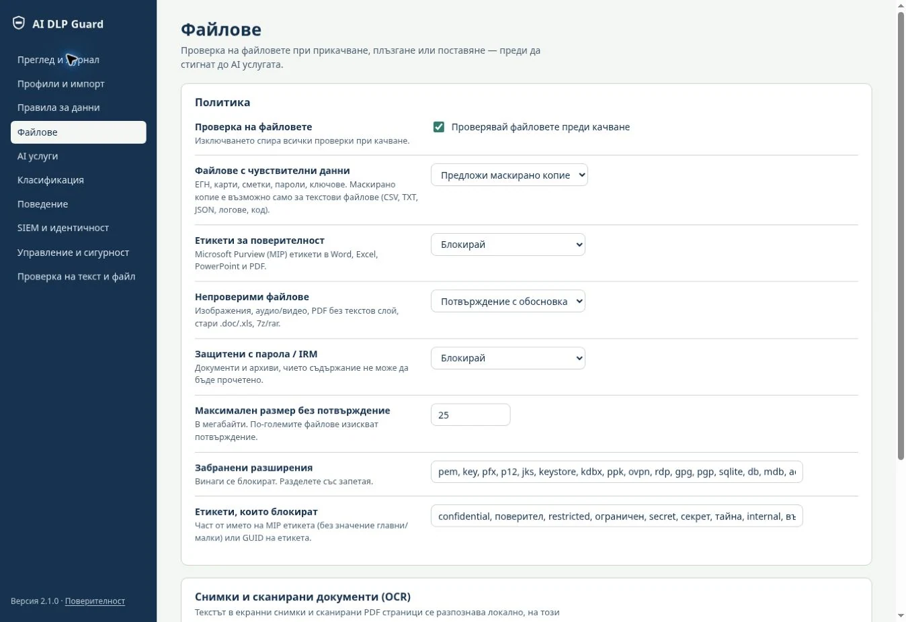
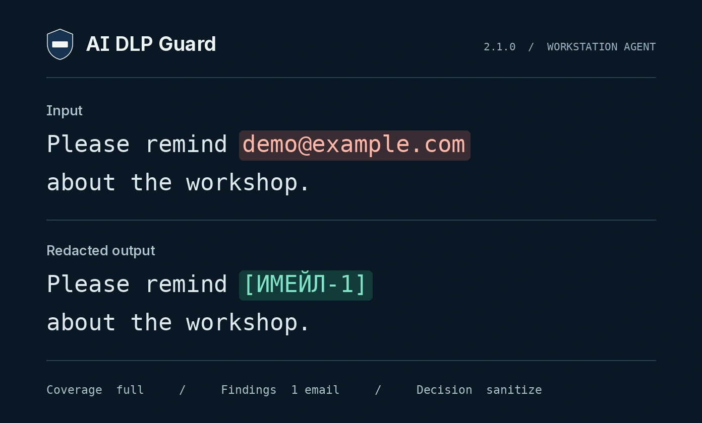

What did the DLP scanner actually read?
A text prompt and a PNG both produced zero findings. Four local runs of AI DLP Guard show how to tell which content was inspected.

A browser prompt is only one way a document can reach an AI service. AI DLP Guard applies a shared inspection engine in the browser and at configured developer-tool entry points. A self-hosted console distributes policy and receives event metadata.
In the extension’s local tester, a note contains two invented email addresses and a confidentiality label. Each address gets its own placeholder. The label remains highlighted for a separate confirmation decision. The original and proposed output stay visible side by side.
The same policy can meet different input formats. The browser can inspect a text layer or invoke its bundled OCR. The agent records limited coverage when it cannot read an image. A zero finding count is meaningful only alongside that coverage.


Inspects prompts and uploads on supported Chromium sites, offers redaction and observes matching browser requests.
Adds managed-browser permissions. A force-installed build can cancel matching requests through an additional listener.
Scans text and files, supplies Claude Code and Cursor hooks, and supports a stdio MCP proxy and a local API gateway.
Enrolls devices, publishes signed group policies and supports role-scoped reporting and configured SIEM forwarding.

Release 2.1.0 packages the two browser editions, workstation agent and management console. The console includes a migration from 2.0.0. All four packages contain the same nine shared engine modules.
A text prompt and a PNG both produced zero findings. Four local runs of AI DLP Guard show how to tell which content was inspected.